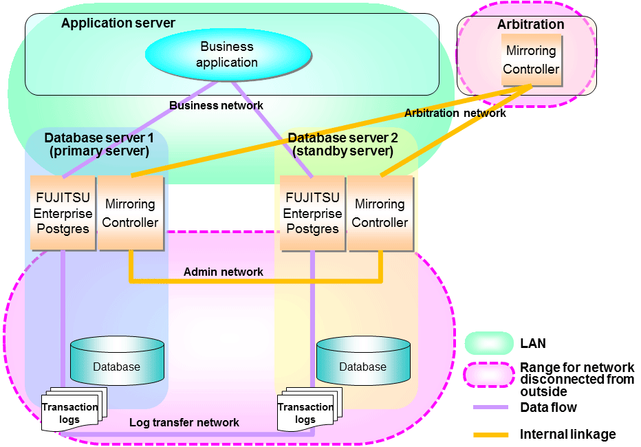
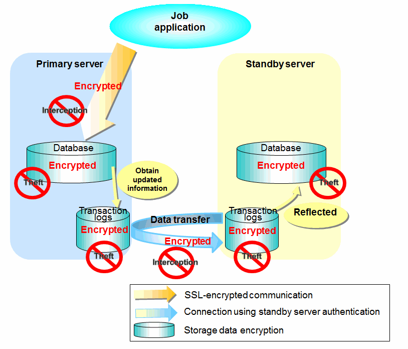

The database server replicates the database on all servers that comprise the cluster system. It achieves this by transferring and reflecting the updated transaction logs of the database from the primary server to the standby server.
To safeguard the database against unauthorized access and preserve data confidentiality in transaction log transfers, carefully consider security and take note of the following when performing database multiplexing:
Do not use trust authentication when using replication connection.
Configure the admin network and the log transfer network so that they cannot be connected from the outside, as shown in Figure 1.7 Security.
Additionally, for the line on which Mirroring Controller connects from the database server to the arbitration server, take note of the following points and consider security carefully.
Build a network with the arbitration server disconnected from outside, as shown in Figure 1.7 Security.
Figure 1.7 Security

However, it may not always be possible to adopt the configuration mentioned above. For example, you may want to place the servers in a nearby/neighboring office to minimize network delays.
In this case, combine the following features to enhance security:
When these features are combined, security will be achieved as shown below.
Point
If the job network is disconnected from outside, it can be used as the arbitration network. However, if a network is to be used as both a job network and arbitration network, consider the load on the network.
Note
If a port is blocked (access permission has not been granted) by a firewall, etc., enable use of the target port by granting access. Refer to the vendor document for information on how to open (grant access permission to) a port. Consider the security risks carefully when opening ports.
Figure 1.8 Security achieved when standby server authentication is combined with transaction log encryption

See
Refer to "Performing Database Multiplexing" under "Configuring Secure Communication Using Secure Sockets Layer" in the Operation Guide for information on encrypting SSL communications.